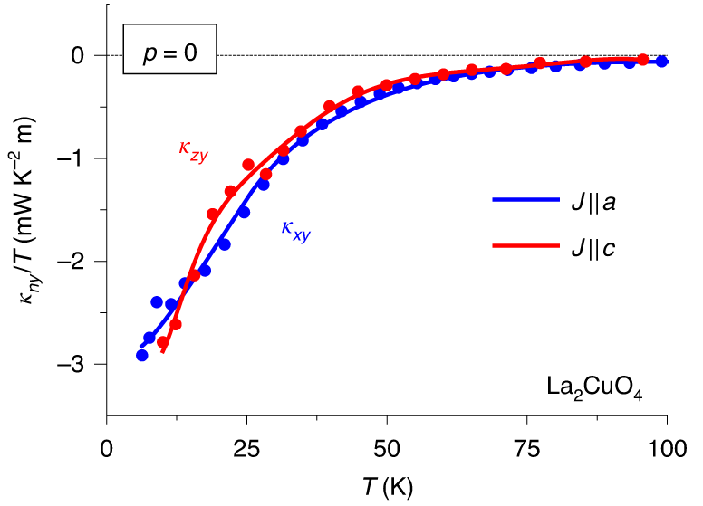

Nouvel article dans Nature Physics
Juillet 2020Le groupe du professeur Taillefer continue d'investiguer l'effet Hall thermique négatif géant découvert l'année dernière dans la phase pseudogap des cuprates supraconducteurs ( Nature 571, 376-380 (2019)). L'équipe révèle aujourd'hui que cet effet provient des vibrations atomiques du matériau, les phonons. Mais comment se peut-il que des particules sans charge électrique se couplent au champ magnétique extérieur pour générer un effet Hall thermique ? Les responsables du phénomène sont désormais démasqués mais l'origine de ce mystère reste entier.